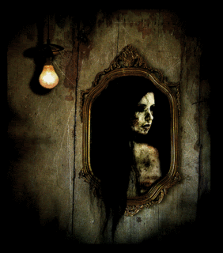

 El misterioso caso de Verónica aún sigue consternando a muchas personas, y es que cuenta la leyenda que hace muchos años en algún lugar del mundo, una chica adolescente en compañía de sus amigos decidió jugar a la ouija, ella al no creer en este tipo de rituales decidió retar a los espíritus del más allá con los que se conectaban… Cuál fue la sorpresa para sus compañeros al ver que de la nada una silla salió volando en dirección a Verónica golpeándola fuertemente para terminar con su vida (Una segunda teoría indica que Verónica salió volando por los aires de forma brusca para terminar estrellada en un espejo). A partir de ese momento el espíritu de Verónica quedó divagando entre el mundo real y el mundo de los muertos, sin embargo eso no es lo peor, pues muchas personas han tratado de invocarla asegurando que cuando se manifiesta el ente es de forma violenta. El método más usual con el que la gente ha tratado de contactarla es por medio de un espejo, pues se colocan 3 velas encendidas frente a él a mitad de la noche y se pronuncia el nombre de “Verónica” tres veces… se sopla vapor en el espejo y aparecerá la fecha de tú muerte.